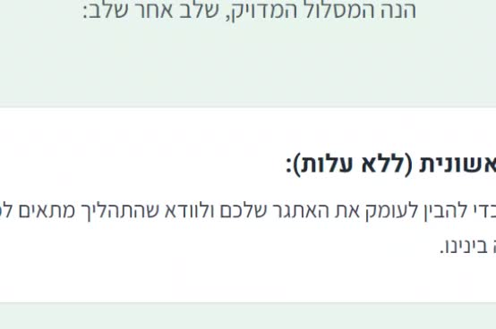
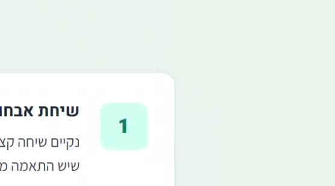

נעים להכיר
מטפל רגשי מוסמך
אני מלווה בחורים ואברכים שמבחוץ הכל נראה אצלם רגוע, אבל בפנים הלב סוער והראש לא נותן מנוחה. בדרך שמשלבת עבודה רגשית עמוקה עם הסתכלות תורנית-אמונית, אני עוזר להבין מה באמת מפעיל אותך, להפסיק להילחם בעצמך ולבנות שלווה פנימית וביטחון אמיתי.
השאירו פרטים ואחזור אליכם בהקדם לשיחת היכרות ראשונית, ללא עלות וללא התחייבות. השיחה דיסקרטית לחלוטין.
מלאו את הפרטים ונחזור אליכם בהקדם לשיחת ייעוץ ראשונית.
האם אחד מהמשפטים הבאים נשמע לכם מוכר מדי?
אתם חיים במציאות של לחץ מתמיד, בזמן שאתם חולמים על משהו אחר לגמרי. אתם חולמים על היכולת פשוט לנשום עמוק ולהרגיש שקט אמיתי בראש. לקום בבוקר עם אנרגיה, לנהל את החיים שלכם במקום שהם ינהלו אתכם. אתם רוצים כלים מעשיים שיעזרו לכם ברגע האמת, ושאיפה אחת פשוטה – להרגיש שוב. להתרגש, לאהוב, ולהיות נוכחים ברגע.
הבעיה היא לא אתם. הבעיה היא שרוב הגישות מטפלות רק בסימפטומים, לא במקור של התקיעות. אתם לכודים ב"מעגל התסכול", שבו כל ניסיון לשינוי מוביל לאותה נקודה של ייאוש, עד שאתם מתחילים להאמין ששום דבר כבר לא יעזור. אבל זה לא חייב להיות ככה.
אני ישראל דפנה, מטפל רגשי מוסמך, ובשנים האחרונות לויוויתי עשרות אנשים שהיו בדיוק איפה שאתם נמצאים עכשיו. גיליתי שפריצת דרך אמיתית לא דורשת שנים של טיפולים, אלא גישה ממוקדת שמטפלת בשורש הבעיה הרגשית ומעניקה לכם כלים מעשיים מהיום הראשון.
גם להשתחרר מהמטענים הרגשיים של העבר וגם לבנות חוסן נפשי ועוצמה להתמודד עם אתגרי המחר.
גם לקבל כלים פרקטיים להרגעה מיידית וגם לטפל בשורש העמוק של הלחץ והחרדה.
גם להגיע לשקט נפשי ואיזון פנימי וגם לראות תוצאות מוחשיות בקריירה ובמערכות היחסים שלכם.
השיטה הזו לא נועדה לכולם, אבל אם אתם רציניים לגבי יצירת חיים חדשים, היא יכולה להיות בדיוק בשבילכם.
התחילו את המסע לשקט נפשימספרים שמראים שהשינוי אפשרי וקרוב מתמיד
זה לא עוד טיפול. זוהי השיטה המוכחת שמחברת בין הבנת שורש הבעיה לבין כלים מעשיים שתוכלו ליישם באופן מיידי. אנחנו לא "רק מדברים", אנחנו עושים. צעד אחר צעד, אנחנו בונים לכם תוכנית אישית שמובילה לתוצאות.
במקום להתמקד בסימפטומים, אנחנו יורדים לעומק. נזהה יחד את החסמים הרגשיים והאמונות המגבילות שגורמים לכם "לדרוך במקום" כבר שנים. תבינו סוף סוף למה אתם מרגישים כמו שאתם מרגישים.
תקבלו כלים פרקטיים ומוכחים מבוססי NLP ותהליכי עבודה עם התת-מודע, שתוכלו להשתמש בהם בכל רגע נתון:
השינוי האמיתי קורה ביום-יום, לא רק בקליניקה. לכן תקבלו ליווי ותמיכה גם בין המפגשים, כדי להבטיח שהכלים החדשים הופכים לחלק מכם ושהשינוי נשמר לטווח ארוך.
עצמו את העיניים ודמיינו את זה לרגע...
אתם לוקחים נשימה עמוקה, והפעם, אין שום מועקה בחזה. הכתפיים שלכם רפויות, הראש שלכם שקט. המחשבות הטורדניות שניהלו אתכם פשוט נעלמו, ובמקומן יש תחושה שלווה של שליטה.
אתם יוצאים מהבית ומרגישים אחרת. אתם לא שורדים את היום, אתם חווים אותו.
אתם מרגישים אנרגיה וחיות שלא הרגשתם שנים.
אתם מקבלים החלטות בקלות ובביטחון, בלי הדאגות והפחדים ששיתקו אתכם בעבר.
אתם נוכחים ברגע עם האנשים שאתם אוהבים, במקום להיות שקועים במחשבות.
אתם חוזרים הביתה מהעבודה ויש לכם סבלנות ופניות למשפחה ולעצמכם.
אתם מסתכלים במראה ומחייכים, כי סוף סוף אתם מרגישים טוב עם מי שאתם.
זו לא פנטזיה. זו המציאות שמחכה לכם בצד השני של ההחלטה לעשות שינוי אמיתי.
אני רוצה את העתיד הזההצטרפו לעשרות אנשים שכבר עשו את הצעד לעבר חיים טובים יותר
"כאן תופיע המלצה"
"כאן תופיע המלצה"


הנה המסלול המדויק, שלב אחר שלב:
נקיים שיחה קצרה כדי להבין לעומק את האתגר שלכם ולוודא שהתהליך מתאים לכם. זהו שלב קריטי שבו נבדוק שיש התאמה מלאה בינינו.
בפגישה הראשונה שלנו נצלול לשורש הבעיה, נמפה את כל החסמים ונבנה יחד תוכנית פעולה אישית ומותאמת בדיוק לצרכים שלכם.
ניפגש באופן קבוע לסדרת מפגשים אינטנסיביים שבהם נטמיע את הכלים, נשחרר את המטענים הרגשיים וניצור שינוי עמוק ויציב. זהו תהליך פשוט וישיר.
אתם לא לבד במסע הזה. תקבלו ליווי אישי ותמיכה זמינה בטלפון לכל שאלה, אתגר או צורך בשיתוף.
נוודא כל הזמן שאנחנו בכיוון הנכון, שהשגנו את המטרות שהצבנו, ושאתם מרגישים את השינוי בכל תחומי החיים שלכם.
לפני שנים, גם אני חייתי בתוך "מעגל התסכול". קמתי כל בוקר עם לחץ בחזה, הרגשתי שאני לא ממשש את הפוטנציאל שלי, וכל יום נראה כמו עותק של קודמו. הרגשתי שבור מבפנים. ניסיתי פתרונות שונים, דיברתי עם אנשי מקצוע, אבל שום דבר לא באמת חדר את חומת הייאוש.
השינוי הגיע כשהבנתי שרוב הגישות מנסות לתקן את המחשבות, במקום לטפל ישירות ברגש שיוצר אותן. התחלתי לחקור לעומק את עולם התת-מודע, למדתי והתמחיתי בשיטות NLP וכלים מתקדמים לעבודה רגשית. שם גיליתי את המפתח: היכולת לגשת ישירות לשורש הבעיה ולשחרר את המטענים הרגשיים מהמקור, במקום רק לנהל את הסימפטומים.
המסע האישי שלי הפך לשליחות שלי. אחרי שחוויתי על בשרי מהי פריצת דרך אמיתית, אני יודע שזה אפשרי עבור כל אחד. אני עושה את זה כי אני מאמין ששום אדם לא צריך לחיות חיים של סבל, תסכול ותקיעות. המשימה שלי היא לתת לכם את הכלים, הליווי והביטחון כדי שגם אתם תוכלו להגיע לשקט הנפשי, לאיזון ולשמחת החיים שמגיעים לכם.
| רכיב | תועלת | שווי |
|---|---|---|
| סדרת מפגשי טיפול 1:1 ממוקדים | טיפול שורש עמוק ויסודי בחסמים הרגשיים שמעכבים אתכם | |
| בניית 'ארגז כלים' רגשי אישי | כלים מעשיים וזמינים להתמודדות עם לחץ וחרדה בזמן אמת | |
| ליווי ותמיכה אישית בטלפון | ביטחון מלא שיש לכם גב מקצועי בין המפגשים, לכל אתגר | |
| הקלטות של תרגולים מותאמים אישית | יכולת להטמיע את השינוי גם בבית, בקצב שלכם | |
| בונוס: פגישת מעקב לאחר 3 חודשים | וידוא שהשינוי נשמר וקיבוע ההצלחה לטווח ארוך |
שווי כולל: ₪8,000
צרו קשר לקבלת פרטים על שיחת אבחון ללא עלות
אני רוצה להתחיל את השינויאתם מרגישים תקועים ומוכנים לעשות עבודה אמיתית כדי לצאת מזה. אתם מבינים שאין פתרונות קסם ומחפשים ליווי מקצועי שיעזור לכם להגיע לשורש הבעיה. אתם מחויבים לתהליך, פתוחים לגישה חדשה ורוצים תוצאות שנשארות לטווח ארוך. אתם שואפים ליותר מסתם "להרגיש בסדר" – אתם רוצים להרגיש מצוין.
אתם מחפשים כדור קסם או פתרון מהיר בן לילה. אתם לא פנויים רגשית או מנטלית להשקיע בתהליך עומק. אתם לא מאמינים ביכולת שלכם להשתנות ומחפשים מישהו שיעשה את העבודה "במקומכם". אם אתם סקפטיים באופן קיצוני ולא מוכנים לנסות גישה שונה ממה שהכרתם עד היום.
זו מחשבה הגיונית לחלוטין, במיוחד אם נפגעתם בעבר. ההבדל המרכזי כאן הוא הגישה. אנחנו לא נשארים ברמת הדיבורים. אנחנו יורדים לשורש הרגשי בתת-המודע, המקום שבו הבעיות באמת נוצרות, ונותנים לכם כלים מעשיים מהיום הראשון. התהליך ממוקד תוצאות, ואתם תרגישו את השינוי כבר מהמפגשים הראשונים.
זו אחת האמונות המגבילות הנפוצות ביותר, והיא פשוט לא נכונה. המוח שלנו גמיש ויכול להשתנות בכל גיל. השיטות שבהן אנחנו משתמשים עובדות ישירות עם תת-המודע כדי ליצור "חיווט מחדש" של דפוסים ישנים. זה לא משנה כמה זמן אתם סוחבים את המטען הזה – אפשר לשחרר אותו.
זו שאלה של השקעה מול עלות. כמה עולה לכם להישאר במקום? כמה שווה לכם לקום בבוקר עם שקט נפשי? כמה הייתם משלמים כדי להרגיש אנרגטיים, בטוחים בעצמכם ומלאי שמחת חיים? זוהי השקעה בעצמכם, בבריאות הנפשית שלכם ובעתיד שלכם, והתשואה שלה לא תסולא בפז.
אני כל כך בטוח בתהליך וביכולת שלו לחולל שינוי, שאני לוקח את כל הסיכון על עצמי. אני מתחייב באופן אישי לשביעות הרצון המלאה שלכם מהתהליך. אם בסיום סדרת המפגשים שנקבע, תרגישו שלא קיבלתם ערך משמעותי ולא חוויתם שינוי, תקבלו את כספכם בחזרה. בלי שאלות, בלי אותיות קטנות. הסיכון הוא כולו עלינו.
אתם נמצאים במרחק החלטה אחת מהחיים שאתם באמת רוצים לחיות. חיים של שקט, איזון, ביטחון ושמחה. אל תחכו עוד יום אחד. הצעד הראשון הוא הפשוט ביותר.
100% ללא התחייבות, שיחה דיסקרטית התחילו את השינוי עכשיוהאחריות המלאה שלנו מבטיחה שאין לכם מה להפסיד